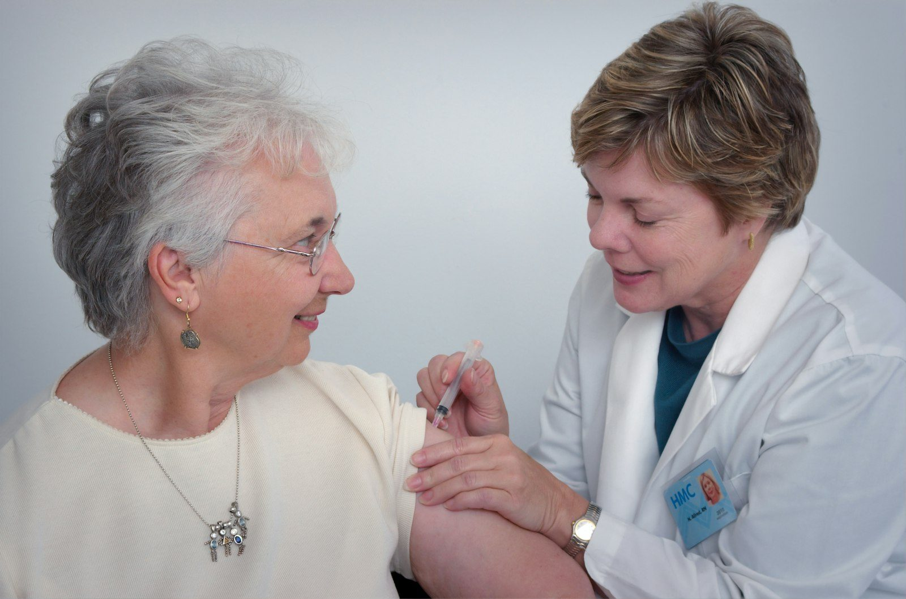

Practical training
Experiential learning & clinical clerkships
Final-year students complete a Pharmacy Practice Experience (PPE) clinical clerkship at affiliated tertiary-care hospitals. Under the revised curriculum, students also take on capstone projects mentored by faculty with links to industry, hospitals and community pharmacy.